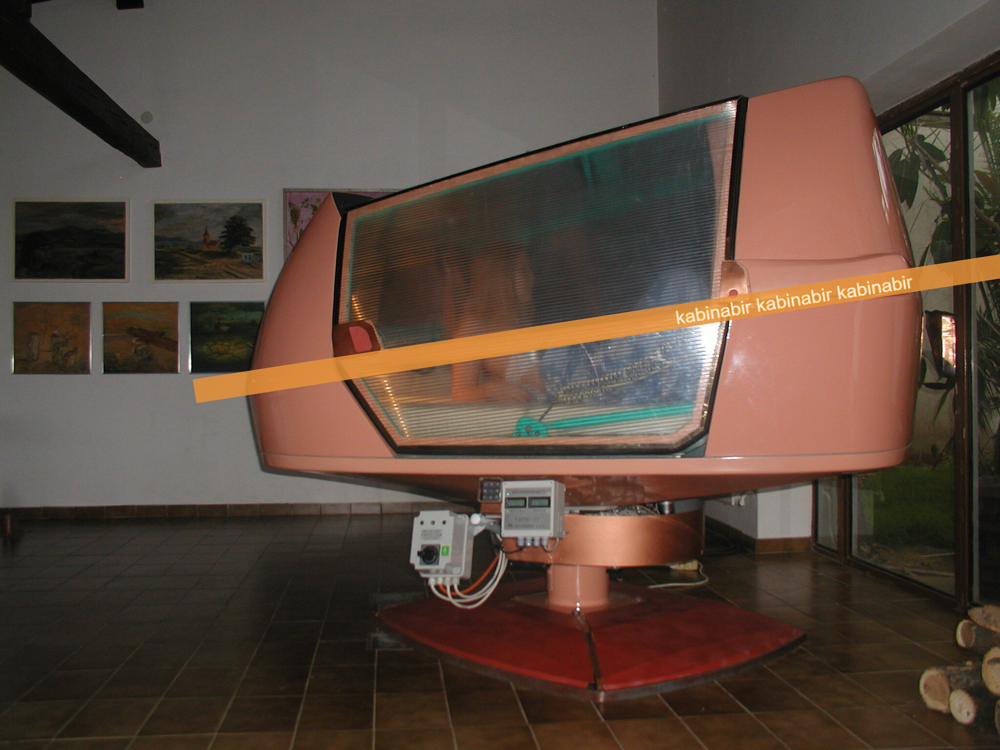

Kabina BIR
Designový projekt pro relaxaci a technické nadšence
Prozkoumat funkceO projektu
Autor nabízí tento projekt a dokumentaci za smluvních podmínek pro účely mnohostranného využití, především pro relaxaci. Je vhodný pro jednotlivce nebo skupiny s zájmem o design nebo technicky zaměřené ovládání.

×
❮
❯
Funkce a vlastnosti
Ovládání
Otáčení, náklon v obou směrech a otevírání víka
Elektrický systém
Podpora napětí 12 V, 24 V a napájení ze sítě 220 V
Vnitřní vybavení
Externí obvody, kamerový systém, monitory, ventilace a možnost klimatizace
Kontaktujte nás
Telefon: +420 775 644 207
Email: kabina.bir@seznam.cz
Poznámka: Prosím pouze přes SMS